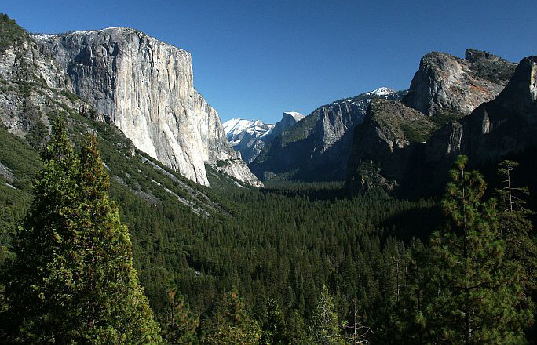

(b) Block mountains
A Block Mountain (horst) is an upland area with a table-like structure bordered by faults on one or both sides. It is formed when tensional or compressional forces in the crust force layers of crustal rocks to break, resulting in central part being uplifted (Figure 4.5). Examples of Block Mountains are the Uluguru and Usambara in Tanzania, and Ruwenzori in Uganda (East Africa), the Vosges and Black Forest Mountains in Europe, and Mount Sinai in Asia.

(c) Volcanic mountains
When rocks are under intense heat and pressure in the earth’s crust they melt and form magma. When the magma inside the earth’s crust finds a weak point in the earth’s crust, they erupt and molten rock flows out as lava. When it cools, it forms a cone. Volcanic Mountains are cone-shaped mountains formed from the cooling and solidification of hot molten rock material (lava) from the interior of the Earth during a volcanic eruption. There are three main types of Volcanic Mountains, depending on the frequency of eruption and the types of lava.
Active volcano mountains are the ones which experience periodic eruptions. For example, Oldonyo Lengai in Tanzania, Vesuvius in Italy (Figure 4.6 a), Nyiragongo in the Democratic Republic of Congo, and Mauna Loa in Hawaii. Volcanic Mountains, which erupted only once in historical times, are referred to as dormant volcanic mountains, since they are no longer active. Examples include Mount Kilimanjaro in Tanzania (Figure 4.6 b), Mount Ararat in Turkey, Fuji in Japan and Mauna Kea in Hawaii. Volcanic Mountains,